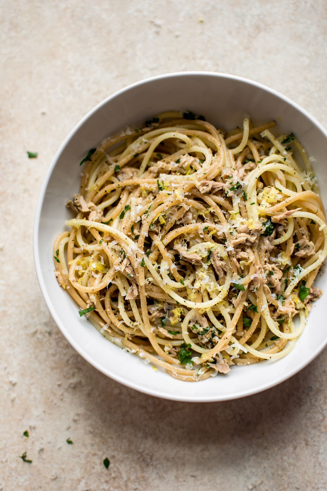

Easy Canned Tuna Pasta

Why you'll love it
This tuna garlic pasta recipe takes me back to my childhood. My mom used to make something similar when I was a kid, and I just loved it. I’ve even made this with just tuna, garlic, and olive oil when I’m in a rush and I really have nothing in the fridge.I never put this recipe on the blog because I wasn’t sure people would like it even though I know it tastes great. I did a little research, and there definitely is demand for canned tuna pasta, so I figured I’d do it! If you’re busy with after school activities, this tuna spaghetti recipe is one way to save some time and keep your sanity.
Ingredients
- Pasta: I use penne
- Olive oil: for the base of the sauce
- Garlic: use even more than suggested if you’re a big fan. I like using a garlic press to easily mince the cloves.
- Tuna: the star of this inexpensive pasta recipe! I recommend using a can of tuna packed in oil for maximum flavor.
- Lemon juice: for a pop of acidity and brightness
- Parsley: a little freshness and herb flavor
Steps
- Cook the pasta until al dente. Meanwhile, prep the other ingredients. When the pasta is almost done, heat up the oil in a saucepan. Once hot, add the garlic and cook until fragrant. Stir in the tuna, lemon juice, and chopped parsley.
- Let it heat through. Once the pasta is done, drain it, reserving some of the pasta water. Add a couple of tablespoons of it to the sauce. Toss the spaghetti with the sauce, and season with salt & pepper as needed.